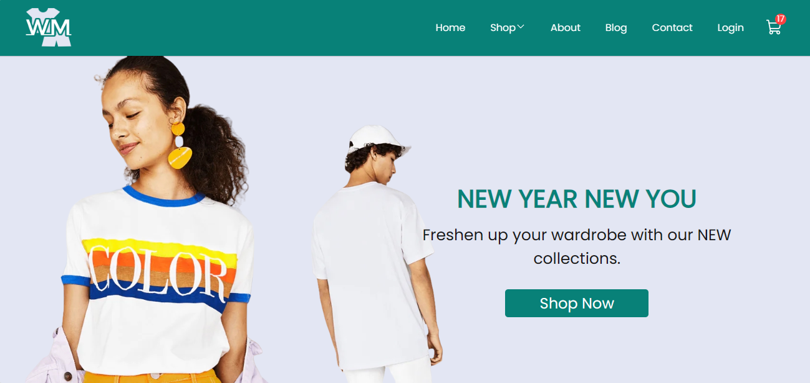

Projects

94/3
94/3 is a comprehensive online shopping platform that simulates a diverse marketplace for both male and female clothing and jewelry.

the Weather App
This is a dynamic weather app. Seamlessly designed with a user-friendly interface, this application boasts a convenient search bar, allowing users to effortlessly explore real-time weather conditions for specific cities and countries.

WM
WM is an online shopping platform, offering a comprehensive experience that simulates a diverse marketplace for both male and female clothing across various genres.